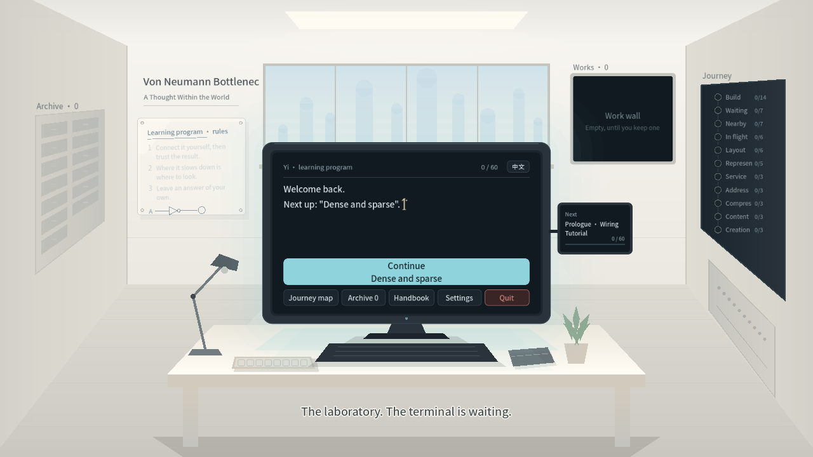
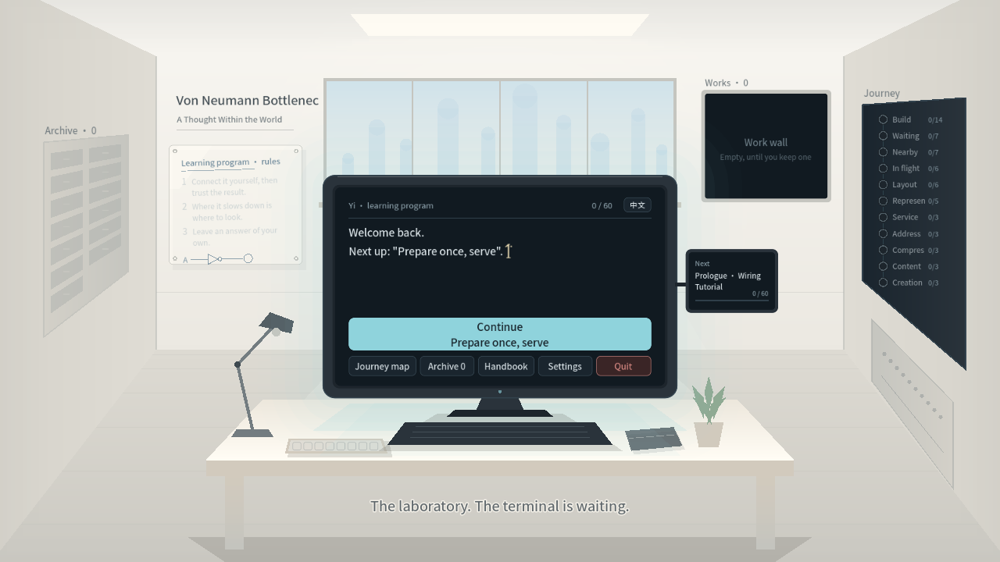
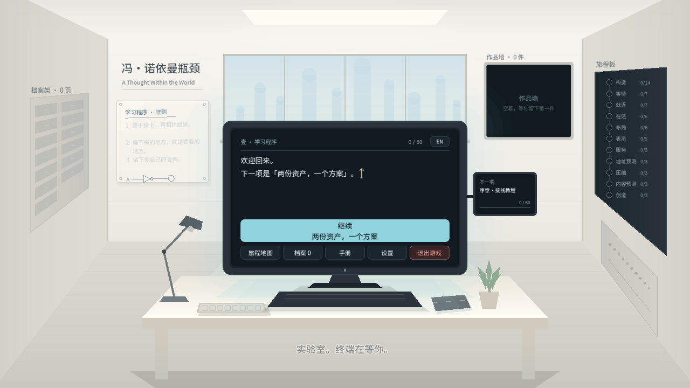

终端任务名称
真实目录的终端呈现夹具；未授予通关，旁边小屏仍读取真实新存档。截图不代表60关通关或原生输入验收。1280×720。
en-creation-G3_keepen-hardware_foundations-cpuen-hardware_foundations-half_adderen-hardware_foundations-tutorialen-representation-cross_assetsen-representation-dense_sparse
en-representation-interior_hotspotsen-representation-prepare_once
zh_CN-creation-G3_keepzh_CN-hardware_foundations-cpuzh_CN-hardware_foundations-half_adderzh_CN-hardware_foundations-tutorialzh_CN-representation-cross_assets
zh_CN-representation-dense_sparsezh_CN-representation-interior_hotspotszh_CN-representation-prepare_once